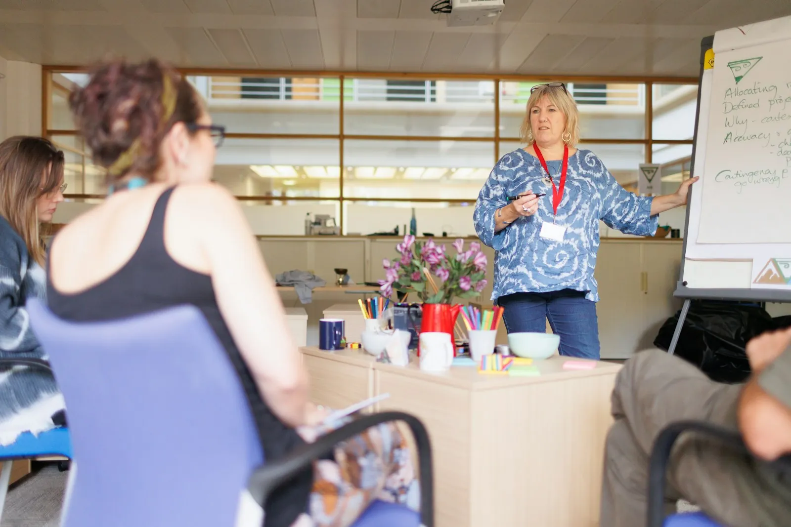

Nivel I
Basic
Para organizaciones que comienzan a fortalecer su gestión.
- Diagnóstico inicial
- Recursos prácticos
- Espacios grupales de orientación
Para organizaciones sociales y ESAL
Integramos gestión de proyectos, fortalecimiento organizacional, formación, investigación aplicada e innovación para que tu organización transforme sus propósitos en acciones estructuradas y sostenibles.
Integramos  proyectos,
fortalecimiento,
proyectos,
fortalecimiento,  aplicada
e innovación
aplicada
e innovación  para que cada
organización desarrolle su potencial de transformación social.
para que cada
organización desarrolle su potencial de transformación social.
Cuatro líneas estratégicas
01 / 04
Fortalecimiento organizacional y gestión de proyectos. La línea central de nuestra propuesta de valor.
Torre 7 Proyecta · Portafolio de servicios
Identificación de capacidades, necesidades y oportunidades de mejora.
Diagnóstico · Matriz de oportunidades · Recomendaciones priorizadas
Acompañamiento en la definición de objetivos, prioridades, estrategias e indicadores.
Plan estratégico · Plan de acción · Matriz de indicadores · Esquema de seguimiento
Transformación de necesidades e ideas en proyectos con objetivos, actividades, recursos, resultados e indicadores.
Perfil de proyecto · Marco lógico · Presupuesto y cronograma
Identificación y análisis de oportunidades de financiación y cooperación pertinentes. No implica garantizar financiación ni aprobación.
Matriz de oportunidades · Criterios de elegibilidad · Hoja de ruta para la postulación
Diseño de herramientas para monitorear actividades, resultados y avances hacia los objetivos.
Indicadores · Instrumentos de seguimiento · Matrices de resultados e informes
Acompañamiento para identificar oportunidades de fortalecimiento y mejorar las condiciones de continuidad de los procesos organizacionales.
Diagnóstico de sostenibilidad · Plan de mejora · Recomendaciones de gestión
Cómo trabajamos
Escuchamos a la organización, identificamos su necesidad y delimitamos el alcance del trabajo.
Definimos objetivos, metodología, actividades, entregables y criterios de seguimiento.
Ejecutamos las actividades acordadas y construimos las soluciones con el cliente.
Revisamos resultados, documentamos aprendizajes y proponemos acciones de continuidad.
Membresías Torre 7 Proyecta
El alcance de cada nivel se define con tu organización.
Nivel I
Para organizaciones que comienzan a fortalecer su gestión.
Nivel II
Para organizaciones que necesitan acompañamiento periódico.
Nivel III
Para organizaciones que requieren un acompañamiento más integral.
Nuestra visión
2035
Una empresa reconocida en Colombia y con proyección internacional, que genera soluciones pertinentes, alianzas estratégicas e impactos sostenibles para las organizaciones y los territorios.
Con organizaciones sociales y entidades sin ánimo de lucro (ESAL) de manera especial, y también con empresas, entidades sociales e instituciones.
Sí. Estas líneas amplían la oferta de Torre 7 Proyecta y también pueden contratarse de manera independiente cuando la necesidad lo justifique.
No. Identificamos y analizamos oportunidades pertinentes, criterios de elegibilidad y la hoja de ruta para postular, pero no garantizamos financiación ni aprobación.
Los entregables definitivos dependen del diagnóstico y del alcance acordado con cada organización.
Presencial, virtual o combinada.
Red de ESAL
Un espacio para visibilizar e impulsar a las entidades sin ánimo de lucro y organizaciones sociales que hacen parte de nuestra red.
No encontramos organizaciones con ese criterio.
Hablemos
Cuéntanos qué necesita tu organización y construiremos una propuesta de acompañamiento ajustada a tus objetivos, recursos y contexto.